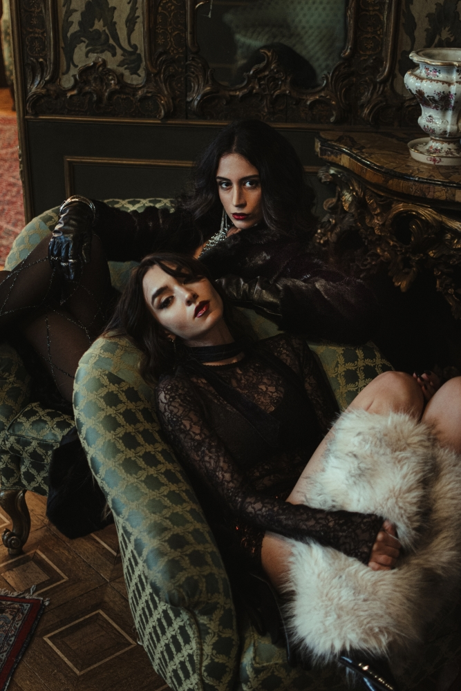
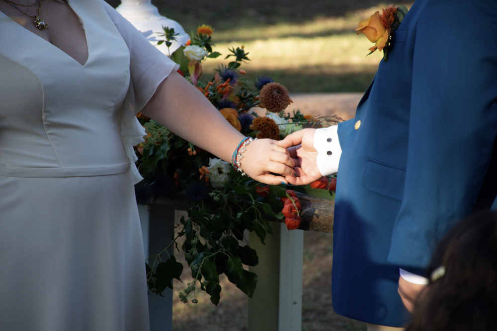
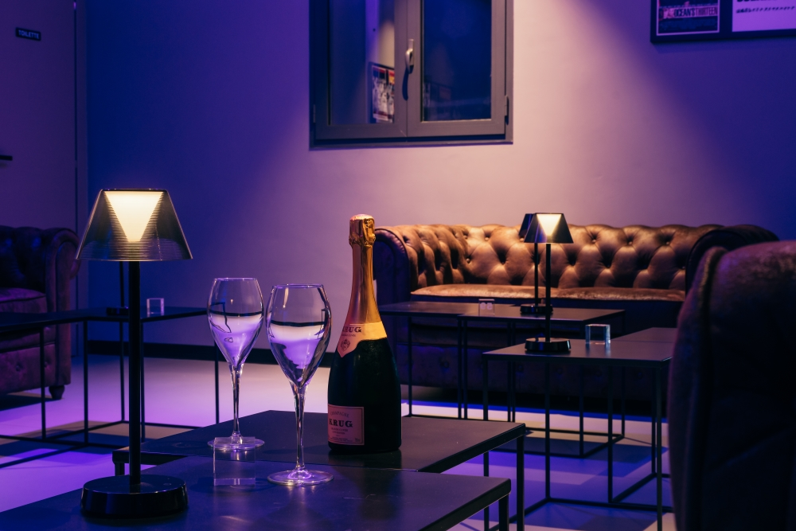
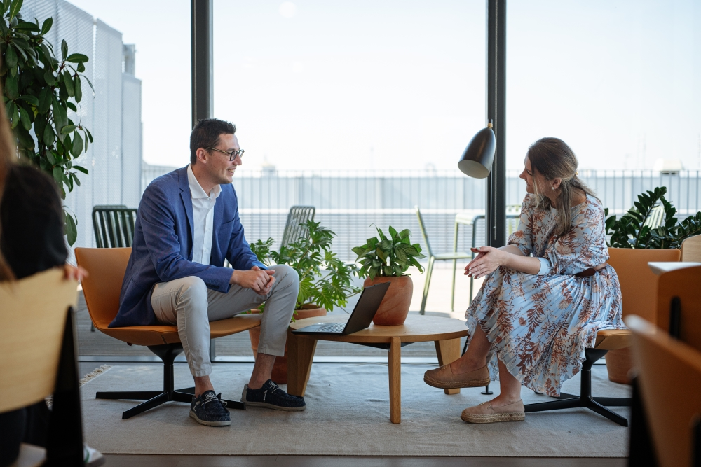
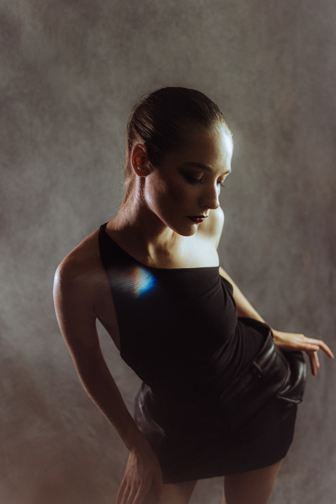

Un'immagine forte e distintiva è fondamentale per emergere. Realizzo ritratti che uniscono l'estetica editoriale all'autenticità del soggetto, ideali per pubblicazioni, personal branding e campagne creative.

Custodisco i ricordi dei tuoi momenti più importanti con un approccio reportagistico, discreto e spontaneo. Nessuna posa forzata, solo emozioni autentiche.

Valorizzare gli spazi richiede occhio per le geometrie e una profonda comprensione della luce. Un servizio dedicato a chi ha bisogno di mostrare l'anima di un ambiente con precisione e stile.

L'immagine della tua azienda raccontata con professionalità. Dalla valorizzazione del team alla documentazione dei grandi eventi milanesi, offro soluzioni visive studiate per la comunicazione aziendale.

Un portfolio solido è il tuo miglior biglietto da visita per agenzie e casting. Costruiamo insieme un comp card che mostri la tua reale versatilità.